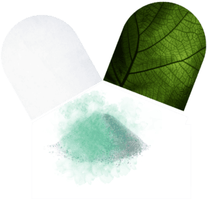
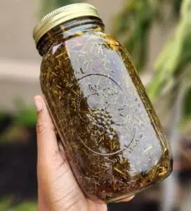
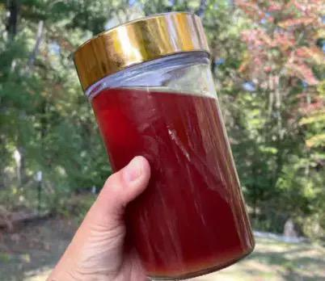
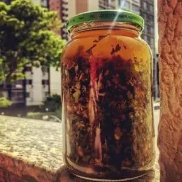
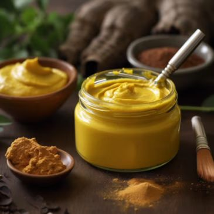
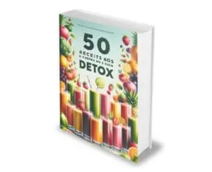

DEIXE OS COMPRIMIDOS DE LADO:
Aprenda fazer QUALQUER remédio na cozinha da sua casa!
SOMENTE HOJE!
DE R$ 87,00
Por apenas
R$ 5,90
Lembrando, esses são APENAS ALGUMAS das garrafadas... São + de 970 opções

Receita natural anti-inflamatório
Receita natural antibiótico
Receita natural analgésico

Descubra o que uma mistura de algumas ervas e grãos especiais pode transformar apenas um copo dessa bebida antes de dormir. Tem como função equilibrar a pressão arterial, reduzir o estresse e trazer um relaxamento profundo, promovendo assim mais qualidade de vida e deixando longe o aumento da pressão.

Cansado de não ter interesse e apelar para métodos perigosos tanto para você ou seu parceiro? Ensinamos você a fazer seu próprio Xarope Estimulante para utilizar antes dos momentos a dois. Uma combinação de ervas potentes que vai ativar desejos profundos e reativar a chama.

Você enfrenta desafios para manter seus níveis de glicose dentro da média? Não se preocupe, vamos ensinar para você a Tintura de Ervas, quando diluída em água e consumida antes das refeições, pode fazer uma redução em seus níveis de açúcar no sangue. Em apenas três dias de uso, você poderá perceber resultados notáveis.
Você vai precisar de uma colher de 4 ervas secretas, irá mantê-la em conserva por 7 dias para liberar o máximo dos nutrientes. Após isso utilizará essa preparação em dias alternados, aplicando nas pernas enquanto usa uma meia de extensão. Isso irá bombear as veias da região e com 10 dias você obterá um resultado visível.

Descubra o poder de uma planta capaz de potencializar sua energia, melhorar a circulação e aliviar dores nos pés, você deve passar todos os dias antes de dormir e ao acordar. Essa pomada não só ativa a circulação, mas também combate a retenção, proporciona conforto e bem-estar a cada passo.
Pix ou Cartão de Crédito 100% Seguro +970 Receitas de Remédios Naturais
Você pode acessar pelo celular, computador em qualquer lugar. Apenas abrir e praticar suas receitas.
Se preferir, todo arquivo é ajustado e organizado para você fazer a impressão caso desejar.
Veja como é bom ficar livre do remédios convencionais que acabam com a nossa saúde, não seja mais uma vítima da grande indústria e aprenda utilizar as Plantas Medicinais para se tratar...
#BONUS 1:
Este guia mostrará as melhores maneiras possíveis de combater os sintomas comuns da menopausa naturalmente e ajudá-la a viver uma vida saudável e feliz após a menopausa.
#BONUS 2:
Aprenda tudo sobre os Óleos essenciais, você ficará impressionado com os benefícios que trará para sua Saúde e da sua família!
#BONUS 3:
10 Banhos Naturais Poderosos para equilibrar sua energia, aliviar o estresse e promover uma sensação geral de harmonia.
#BONUS 4:

Este plano cuidadosamente elaborado é a chave para revitalizar seu corpo, aumentar sua energia e alcançar uma sensação de bem-estar rejuvenescedora.
#BONUS 5:
O método que irá ajudá-lo a viver normalmente sem dores e enxaquecas de uma vez
#BONUS 6:
Aprenda a cultivar as Plantas dos seus remédios em casa
+970 RECEITAS MEDICINAIS
SOMENTE HOJE!
DE R$ 87,00
Por apenas
R$ 5,90
SIM! EU QUERO O BEST SELLER⚠️ ATENÇÃO: Essa condição fica disponivel até hoje, então pode ser a sua última chance de comprar com esse desconto!